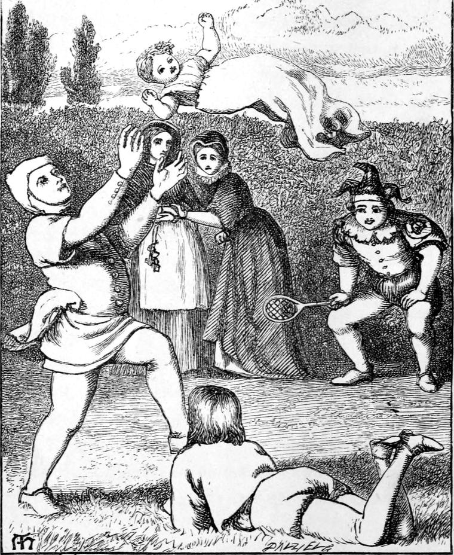

One fine summer day, a month after these her first adventures, during which time she had been very carefully watched, the princess was lying on the bed in the queen's own chamber, fast asleep. One of the windows was open, for it was noon, and the day so sultry that the little girl was wrapped in nothing less ethereal than slumber itself. The queen came into the room, and not observing that the baby was on the bed, opened another window. A frolicsome fairy wind, which had been watching for a chance of mischief, rushed in at the one window, and taking its way over the bed where the child was lying, caught her up, and rolling and floating her along like a piece of flue, or a dandelion-seed, carried her with it through the opposite window, and away. The queen went down-stairs, quite ignorant of the loss she had herself occasioned.
When the nurse returned, she supposed that her Majesty had carried her off, and, dreading a scolding, delayed making inquiry about her. But hearing nothing, she grew uneasy, and went at length to the queen's boudoir, where she found her Majesty.
"Please, your Majesty, shall I take the baby?" said she.
"Where is she?" asked the queen.
"Please forgive me. I know it was wrong."
"What do you mean?" said the queen, looking grave.
"Oh! don't frighten me, your Majesty!" exclaimed the nurse, clasping her hands.
The queen saw that something was amiss, and fell down in a faint. The nurse rushed about the palace, screaming, "My baby! my baby!"
Every one ran to the queen's room. But the queen could give no orders. They soon found out, however, that the princess was missing, and in a moment the palace was like a beehive in a garden; and in one minute more the queen was brought to herself by a great shout and a clapping of hands. They had found the princess fast asleep under a rose-bush, to which the elvish little wind-puff had carried her, finishing its mischief by shaking a shower of red rose-leaves all over the little white sleeper. Startled by the noise the servants made, she woke, and, furious with glee, scattered the rose-leaves in all directions, like a shower of spray in the sunset.
She was watched more carefully after this, no doubt; yet it would be endless to relate all the odd incidents resulting from this peculiarity of the young princess. But there never was a baby in a house, not to say a palace, that kept the household in such constant good-humour, at least below-stairs. If it was not easy for her nurses to hold her, at least she made neither their arms nor their hearts ache. And she was so nice to play at ball with! There was positively no danger of letting her fall. They might throw her down, or knock her down, or push her down, but couldn't let her down. It is true, they might let her fly into the fire or the coal-hole, or through the window; but none of these accidents had happened as yet. If you heard peals of laughter resounding from some unknown region, you might be sure enough of the cause. Going down into the kitchen, or the room, you would find Jane and Thomas, and Robert and Susan, all and sum, playing at ball with the little princess. She was the ball herself, and did not enjoy it the less for that. Away she went, flying from one to another, screeching with laughter. And the servants loved the ball itself better even than the game. But they had to take some care how they threw her, for if she received an upward direction, she would never come down again without being fetched.
